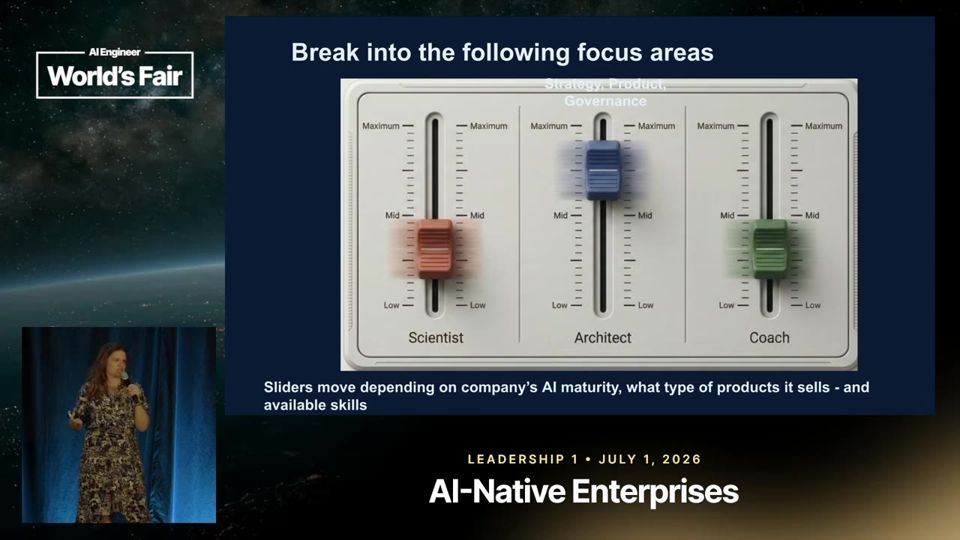
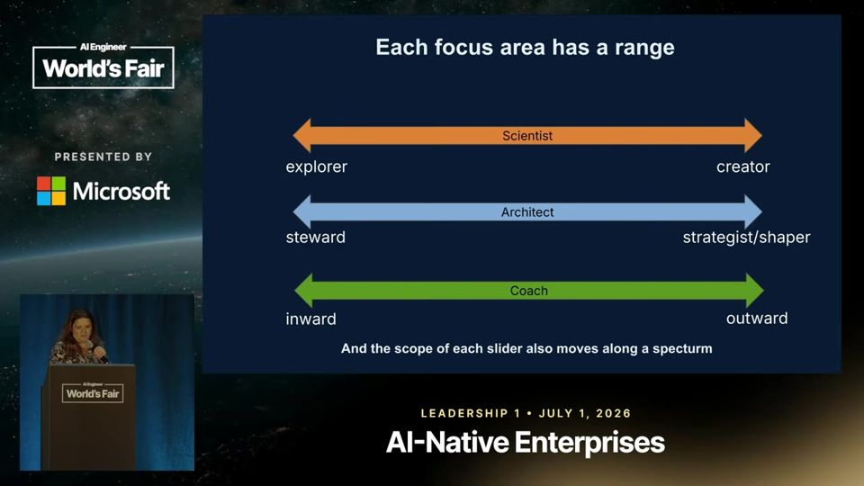
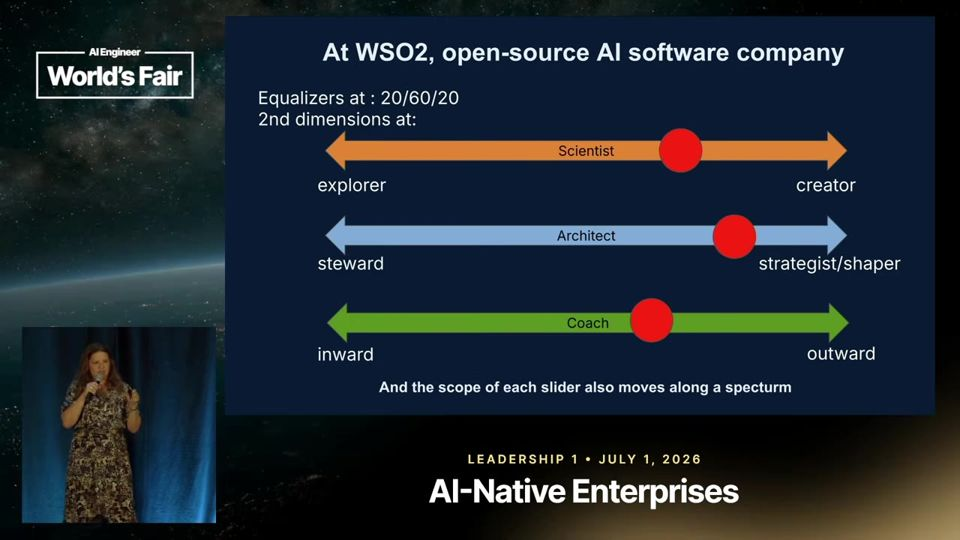
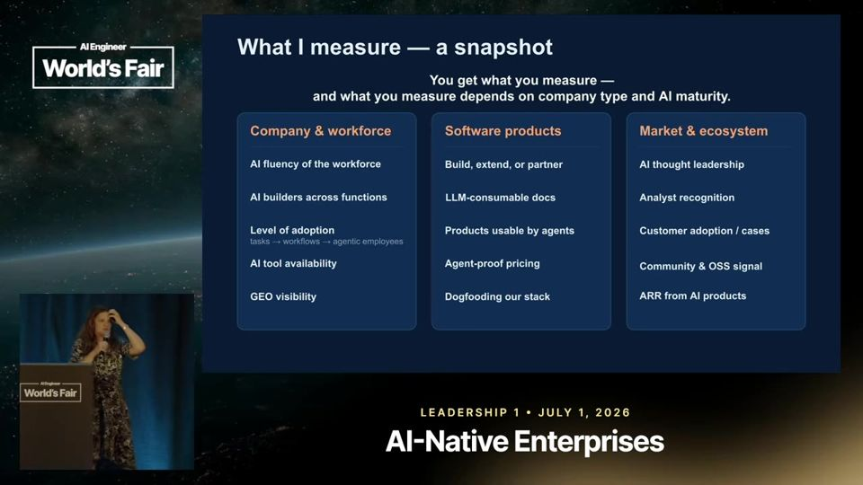
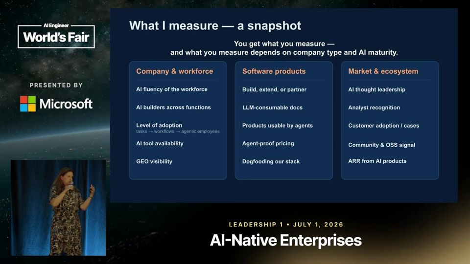

The Chief AI Officer: Scientist, Architect, Coach
O Chief AI Officer cobre três papéis (cientista, arquiteto, coach) e cada empresa regula esses três controles de um jeito, então meça fluência, não tokens.
Em 3 frases
Rania Khalaf, Chief AI Officer da WSO2, divide o cargo em três focos: Scientist (explora e constrói), Architect (define estratégia e produto) e Coach (educa dentro e fora da empresa).
Cada foco funciona como um controle deslizante, e a regulagem muda conforme o tipo de empresa, a maturidade em IA e o perfil de quem ocupa o cargo.
Ela recusa medir tokens porque o número é fácil de inflar. Mede fluência da equipe, profundidade de adoção, visibilidade em buscadores de IA, produtos usáveis por agentes e receita de produtos de IA.
Antes de ler
- AI gateway camada que governa chamadas a modelos analogia abaixo
- Chief AI Officer diretor de IA
- GEO (generative engine optimization) otimização para buscadores generativos
- MCP protocolo que liga agentes a ferramentas
- Skill instrução reutilizável para agentes
- Agent-proof pricing preço que resiste ao uso por agentes
Três chapéus: cientista, arquiteto e coach
Scientist explora, experimenta e constrói. Architect também constrói, mas com foco em estratégia de produto, receita nova e relatório ao conselho. Coach gasta tempo evangelizando, educando e repetindo a mensagem, para funcionários e clientes. Khalaf diz que a parte de coach foi a que mais a surpreendeu depois de 20 anos na IBM Research.

Cada chapéu é um slider
Em um extremo do Architect está o administrador de orçamento, que prioriza projetos e não precisa de conhecimento profundo de IA. No outro, quem reinventa a estratégia da empresa. O Coach olha para dentro quando a empresa não vende IA e para fora quando vende. Ela também usou Claude e Gemini para classificar currículos e vagas do cargo nesses sliders.

Regulagens reais: biotech e WSO2
Na WSO2 ela se descreve com 20% scientist, 60% architect e 20% coach, e faz coaching sobretudo para fora, porque a equipe já é técnica e curiosa. Na biotech agrícola o trabalho era limpar dados e montar infraestrutura. Para medir o tamanho do embrião de milho, bastou detecção de blobs (manchas), sem aprendizado de máquina.

Mais 2 ideias deste talk
Por que ela não mede tokens
Pediram a ela que medisse tokens para saber quanto de IA a empresa usa. Ela recusou, porque o número é fácil de inflar. Prefere medir fluência da equipe (se só um centro de excelência sabe IA), profundidade de adoção (tarefa simples ou fluxo inteiro refeito), disponibilidade de ferramentas e visibilidade em buscadores de IA. Ela lembra que quem mede algo passa a otimizar aquilo.

Produto feito para agentes consumirem
A WSO2 quer que todo produto seja usável por agentes. Isso significa documentação legível por LLM, servidor MCP, skills e CLI em cada produto. O preço é por consumo, para que agentes não estourem um modelo por assento. Fora do produto, ela acompanha reconhecimento de analistas, participação da comunidade open source e receita de produtos de IA.

AI gateway (camada que governa chamadas a modelos). Um AI gateway é como a portaria de um prédio comercial, onde todo visitante se identifica, é registrado e só sobe ao andar permitido.
- Empresas usam modelos de IA por meio de chamadas pela internet. Sem controle, cada time chama o modelo que quiser, do jeito que quiser.
- O AI gateway (portal de entrada para IA) é um ponto único por onde passam todas as chamadas a modelos. Os aplicativos falam com ele, e ele fala com o modelo.
- Nesse ponto, a empresa define regras: quem pode usar qual modelo, quanto pode gastar, quais dados podem sair e o que fica registrado.
- Na WSO2, a palestrante explica que chamadas a modelos são APIs (interfaces de programação), mas exigem gestão diferente. Por isso a empresa pôs um gateway de IA dentro da plataforma de APIs que já tinha.
Ajuda saber antes: API, LLM, Token, Gerenciamento de APIs
O talk descreve uma experiência pessoal, sem dados comparativos nem estudo sobre qual regulagem do cargo funciona melhor. A palestrante é executiva da WSO2 e as métricas que defende (servidor MCP, preço por consumo, open source) coincidem com o que a empresa vende, o que cria conflito de interesse. Ela admite que a visibilidade em buscadores de IA ainda não está resolvida e que a receita de IA é pequena. A análise de currículos com Claude e Gemini aparece sem método ou amostra. As cifras dos estudos da IBM aparecem sem descrição do que mediram.
O que fazer com isso
- Troque a contagem de tokens por indicadores de fluência: quantas áreas têm alguém que constrói com IA e quantos fluxos inteiros foram refeitos, em vez de tarefas soltas.
- Se você lidera IA, defina em percentuais quanto do seu tempo vai para explorar, desenhar estratégia e ensinar, e reveja esses números a cada trimestre.
- Antes de contratar um modelo de aprendizado de máquina, teste se um método simples de visão computacional ou regra resolve o problema.
- Se você vende software, verifique se seu produto tem documentação legível por LLM e interface para agentes, como servidor MCP ou CLI.